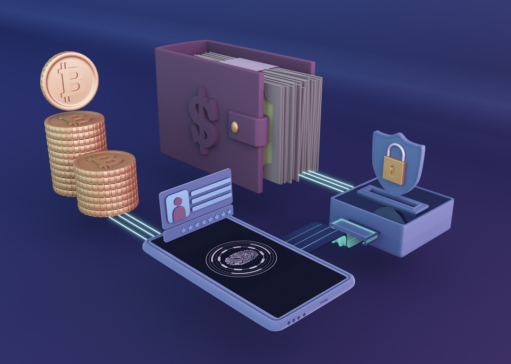

In a world where convenience is king, the rise of digital wallets has revolutionized the way we handle money. The concept of carrying a bulky wallet filled with cash, cards, and receipts is becoming increasingly antiquated. Instead, digital wallets—also known as eWallets—have taken center stage, offering a seamless, secure, and incredibly efficient way to manage finances. But as these digital wallets become more ingrained in our daily lives, a question looms: Are we heading toward a cashless society?
The Digital Wallet Revolution
Digital wallets are essentially the digital evolution of the traditional wallet. These sophisticated tools allow users to store credit and debit card information, loyalty cards, and even cryptocurrencies electronically. With just a few taps on a smartphone, you can pay for groceries, transfer money to a friend, or even make a donation to your favorite charity. But how did we get here?
The journey of digital wallets began with the rise of smartphones and mobile apps. Companies like Apple, Google, and Samsung quickly recognized the potential to turn these devices into powerful financial tools. Apple Pay, Google Pay, and Samsung Pay became pioneers in this space, allowing users to store their card information securely and make payments with a simple tap. These platforms use tokenization—a process where sensitive information is replaced with a unique identifier or token—ensuring that your card details remain safe and secure.
As digital wallets evolved, they began to offer more than just payment solutions. In Europe, for example, platforms like Google Pay, Apple Pay, and Samsung Pay are now widely accepted by merchants. Regional players like Mobile Pay in Denmark, Swish in Sweden, Twint in Switzerland, and Satispay in Italy have also emerged, catering to local preferences and making a significant impact on the payments landscape.
Across the Atlantic, the United States has seen a similar boom in digital wallet adoption. PayPal, one of the oldest and most trusted digital wallets, remains a dominant force, offering a range of services from online payments to money transfers. Venmo, a PayPal-owned platform, has captured the hearts of younger consumers with its social features, allowing users to share transactions with friends. Square Cash, developed by Square Inc., offers a simple and secure way to send and receive money without the need to share personal information.
The rise of digital wallets is not limited to these regions. In Asia, mobile wallets are now used for much more than just basic transactions. Super apps like WeChat in China have integrated digital payments with a host of other services, from wealth management to e-commerce, making them an indispensable part of daily life. The Asia-Pacific region is leading the global growth in digital payments, with adoption rates expected to surge by nearly 20% by 2027.
Defining a Cashless Society
Before diving into whether we are heading toward a cashless society, it’s essential to define what that actually means. A cashless society is one where physical money—cash and coins—are completely replaced by digital currency. In such a society, all transactions are conducted electronically, whether through debit and credit cards, digital wallets, or mobile payment apps.
Imagine a world where you can’t spend or save paper money because it simply doesn’t exist anymore. The cash in your bank account is nothing more than a number on a screen, and every transaction you make, from buying a coffee to paying your rent, is traceable. No more “under the table” payments, no more coins jingling in your pocket—just digital transfers that leave behind a footprint.
It’s worth noting that while the concept of a cashless society might sound futuristic, it’s not entirely new. Countries like Sweden and China are already well on their way to achieving this. In Sweden, cash transactions accounted for just 9% of the country’s GDP as early as 2019, and many businesses no longer accept cash at all. In China, mobile payment platforms like Alipay and WeChat Pay have become the dominant forms of payment, even in rural areas.
However, a completely cashless society raises concerns. For some, the absence of physical money can feel disconcerting. Cash is tangible, reliable, and, for many, offers a sense of security that digital currency can’t match. Moreover, going fully cashless could leave behind those who are less tech-savvy, particularly the elderly and those living in rural areas with limited access to digital infrastructure.
Are We Heading Toward a Cashless Society?

So, with the rise of digital wallets and the increasing reliance on digital payments, are we indeed heading toward a cashless society? The answer is both yes and no.
Yes, in the sense that the trend toward digital payments is undeniable. The global pandemic accelerated this shift, with many consumers turning to contactless payments to minimize physical contact. In the United States, for instance, 84% of payments were made digitally in 2024, according to Clearly Payments. This surge in digital transactions isn’t limited to the young or the tech-savvy; older consumers and those previously resistant to change are also adopting digital wallets at a rapid pace.
Moreover, as mobile commerce continues to grow, nearly 90% of smartphone users are now sending or receiving money via peer-to-peer (P2P) or mobile applications. This shift is not just a trend but a fundamental change in how we manage and spend money. The convenience, security, and ease of use offered by digital wallets make them an attractive option for consumers and businesses alike.
On the other hand, no, because while digital payments are on the rise, cash isn’t disappearing just yet. Pew Research shows that in a typical week, 41% of Americans still make some purchases using cash. Cash remains a trusted and reliable form of payment, especially for those who are unbanked or underbanked. In rural areas, where broadband and mobile connectivity might be limited, cash is still king.
Additionally, a fully cashless society could have significant implications for privacy and security. Digital transactions leave behind a digital footprint, making it easier for financial institutions and businesses to track spending habits. While this data can be useful for personalized marketing and fraud prevention, it also raises concerns about privacy and the potential for misuse of personal information.
There’s also the issue of inclusivity. Digital wallets are incredibly convenient for those who have access to smartphones and the internet, but what about those who don’t? In many parts of the world, including rural areas and developing countries, access to digital infrastructure is still limited. A cashless society could exacerbate existing inequalities, leaving behind those who are already marginalized.
Finally, the resilience of the technology supporting a cashless society is another concern. Natural disasters, cyber-attacks, or even simple technical glitches could render entire financial systems useless, leaving people unable to access their money or make transactions. In such scenarios, the reliability of physical cash becomes apparent.
Conclusion
The rise of digital wallets has undoubtedly changed the way we think about money and payments. From the convenience of paying with a tap of a smartphone to the security offered by tokenization, digital wallets have brought us closer to a cashless society than ever before. However, while the trend toward digital payments is strong, it’s important to remember that cash still plays a crucial role in our economy.
As we move forward, the future may not be entirely cashless but rather a blend of digital and physical currency. This balance ensures that everyone, regardless of their access to technology or comfort with digital payments, can participate in the economy. The choice to use cash or digital wallets should be available to all, allowing us to enjoy the benefits of both worlds.
So, are we heading toward a cashless society? Perhaps, but it’s a journey that will take time, careful consideration, and a commitment to inclusivity and security. Until then, both cash and digital wallets will continue to coexist, each playing a vital role in the evolving landscape of global payments.